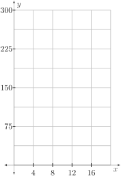
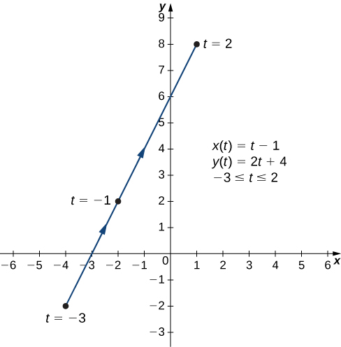
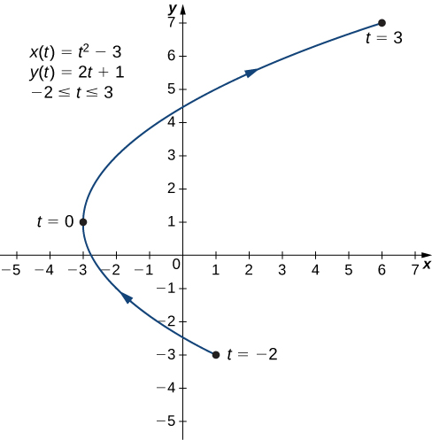
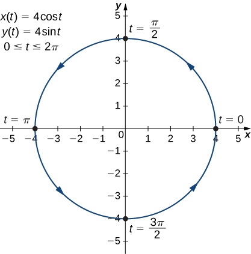
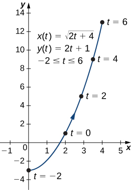
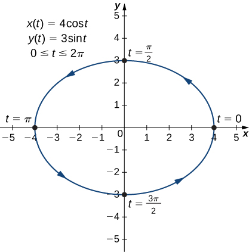

Section 9.1 Parametric Equations
Motivating Questions
What types of equations can be used to describe motion in multiple dimensions as a function of time?
How are basic curves, such as lines and circles, parametrically described?
How do parametric equations help in the modeling process?
Up to this point, we have been representing a graph by a single equation involving two variables such as \(x\) and \(y\text{.}\) However, some graphs are not well described by such equations. In this section, we study situations in which it is useful to introduce a third variable called a parameter to represent a curve in the plane. For example, if the parameter is \(t\) (a common choice), then \(t\) might represent time. Then \(x\) and \(y\) are defined as functions of time, and \((x(t),y(t))\) can describe the position in the plane of a given object as it moves along a curved path. This process is commonly called parameterization and is the basis for our study of parametric curves.
Preview Activity 9.1.1.
A sea gull swoops down and grabs your keys while you are at the beach. The sea gull drops the keys from a height of 256 feet above the ground. Suppose the wind is blowing sideways at a speed of 4 feet per second, so the horizontal component of the keys is give by \(x=4t\) where \(t\) is time (in seconds). The vertical component of the keys with no air resistance at time \(t\) is given by \(y=-16t^2+256\text{.}\)
-
Fill out Table 9.1.1.
Table 9.1.1. Position of keys at various times \(t\) Time \(t\) (sec) Horizontal position (feet)
\(x=4t\)Vertical position (feet)
\(y=-16t^2+256\)\(0\) \(1\) \(2\) \(3\) \(4\) Sketch a graph of the path of the keys. Draw arrows to represent the direction of their path.
Figure 9.1.2. Path of the keys in Preview Activity 9.1.1. Determine an equation that \(x\) and \(y\) satisfy for \(0 \leq t \leq 4\text{.}\)
Suppose the wind now blows at 2 feet per second. Determine \(x\) in terms of \(t\text{.}\) Then, determine an equation that \(x\) and \(y\) satisfy for \(0 \leq t \leq 4\text{.}\)
When do the keys hit the ground in both instances?
Subsection 9.1.1 Parametric Equations and Their Graphs
Consider the orbit of Earth around the Sun. Our year lasts approximately 365.25 days, but for this discussion we will use 365 days. On January 1 of each year, the physical location of Earth with respect to the Sun is nearly the same, except for leap years, when the lag introduced by the extra \(\frac{1}{4}\) day of orbiting time is built into the calendar. We call January 1 "day 1" of the year. Then, for example, day 31 is January 31, day 59 is February 28, and so on.
The number of the day in a year can be considered a variable that determines Earth’s position in its orbit. As Earth revolves around the Sun, its physical location changes relative to the Sun. After one full year, we are back where we started, and a new year begins. According to Kepler’s laws of planetary motion, the shape of the orbit is elliptical, with the Sun at one focus of the ellipse.
Figure 9.1.3 depicts Earth’s orbit around the Sun during one year. The point labeled \(F_2\) is one of the foci of the ellipse; the other focus is occupied by the Sun. If we superimpose coordinate axes over this graph, then we can assign ordered pairs to each point on the ellipse (Figure 9.1.4). Then each \(x\) value on the graph is a value of position as a function of time, and each \(y\) value is also a value of position as a function of time. Therefore, each point on the graph corresponds to a value of Earth’s position as a function of time.
We can determine the functions for \(x(t)\) and \(y(t)\text{,}\) thereby parameterizing the orbit of Earth around the Sun. The variable \(t\) is an independent parameter and, in this context, represents time relative to the beginning of each year.
Definition 9.1.5.
If \(x\) and \(y\) are continuous functions of \(t\) on an interval \(I\text{,}\) then the equations
are called parametric equations and \(t\) is called the parameter. The set of points \((x,y)\) obtained as \(t\) varies over the interval \(I\) is called the graph of the parametric equations. The graph of parametric equations is called a parametric curve or plane curve, and is denoted by \(C\text{.}\)
Example 9.1.6. Graphing a Parametrically Defined Curve.
Sketch the curves described by the following parametric equations.
\(x(t)=t-1\text{,}\) \(y(t)=2t+4\text{,}\) \(-3 \leq t \leq 2\)
\(x(t)=t^2-3\text{,}\) \(y(t)=2t+1\text{,}\) \(-2 \leq t \leq 3\)
\(x(t)=4\cos t\text{,}\) \(y(t)=4\sin t\text{,}\) \(0 \leq t \leq 2\pi\)
-
To create a graph of this curve, first set up a table of values. Since the independent variable in both \(x(t)\) and \(y(t)\) is \(t\text{,}\) let \(t\) appear in the first column. Then \(x(t)\) and \(y(t)\) will appear in the second and third columns of Table 9.1.7.
Table 9.1.7. \(t\) \(x(t)\) \(y(t)\) \(-3\) \(-4\) \(-2\) \(-2\) \(-3\) \(0\) \(-1\) \(-2\) \(2\) \(0\) \(-1\) \(4\) \(1\) \(0\) \(6\) \(2\) \(1\) \(8\) The second and third columns in Table 9.1.7 provide a set of points to be plotted. The graph of these points appears in Figure 9.1.8. The arrows on the graph indicate the orientation of the graph, that is, the direction that a point moves on the graph as \(t\) varies from −3 to 2.
Figure 9.1.8. Graph of the plane curve described by the parametric equations in Example 9.1.6a. -
To create a graph of the curve, again set up a table of values as in Table 9.1.9.
Table 9.1.9. \(t\) \(x(t)\) \(y(t)\) \(-2\) \(1\) \(-3\) \(-1\) \(-2\) \(-1\) \(0\) \(-3\) \(1\) \(1\) \(-2\) \(3\) \(2\) \(1\) \(5\) \(3\) \(6\) \(7\) The second and third columns in Table 9.1.9 provide a set of points to be plotted ( Figure 9.1.10). The first point on the graph (corresponding to \(t=-2\)) has coordinates \((1,-3)\text{,}\) and the last point (corresponding to \(t=3\)) has coordinates \((6,7)\text{.}\) As \(t\) progresses from -2 to 3, the point on the curve travels along a parabola.
Figure 9.1.10. Graph of the plane curve described by the parametric equations in Example 9.1.6b. -
In this case, use multiples of \(\frac{\pi}{6}\) for \(t\) and create the table of values found in Table 9.1.11.
Table 9.1.11. \(t\) \(x(t)\) \(y(t)\) \(0\) \(4\) \(0\) \(\frac{\pi}{6}\) \(2\sqrt{3}\approx 3.5\) \(2\) \(\frac{\pi}{3}\) \(2\) \(2\sqrt{3}\approx 3.5\) \(\frac{\pi}{2}\) \(0\) \(4\) \(\frac{2\pi}{3}\) \(-2\) \(2\sqrt{3}\approx 3.5\) \(\frac{5\pi}{6}\) \(-2\sqrt{3}\approx -3.5\) \(2\) \(\pi\) \(-4\) \(0\) \(\frac{7\pi}{6}\) \(-2\sqrt{3}\approx -3.5\) \(2\) \(\frac{4\pi}{3}\) \(-2\) \(-2\sqrt{3}\approx -3.5\) \(\frac{3\pi}{2}\) \(0\) \(-4\) \(\frac{5\pi}{3}\) \(2\) \(-2\sqrt{3}\approx -3.5\) \(\frac{11\pi}{6}\) \(2\sqrt{3}\approx 3.5\) \(2\) \(2\pi\) \(4\) \(0\) The graph of this plane curve appears in Figure 9.1.12.
Figure 9.1.12. Graph of the plane curve described by the parametric equations in Example 9.1.6c. This is the graph of a circle with radius 4 centered at the origin, with a counterclockwise orientation. The starting point and ending points of the curve both have coordinates \((4,0)\text{.}\)
Subsection 9.1.2 Eliminating the Parameter
To better understand the graph of a curve represented parametrically, it is useful to rewrite the two equations as a single equation relating the variables \(x\) and \(y\text{.}\) Then we can apply any previous knowledge of equations of curves in the plane to identify the curve. For example, the equations describing the plane curve in Example 9.1.6b. are
Solving the second equation for \(t\) gives
This can be substituted into the first equation:
This equation describes \(x\) as a function of \(y\text{.}\) These steps give an example of eliminating the parameter. The graph of this function is a parabola opening to the right (see Figure 9.1.10). Recall that the plane curve started at \((1,-3)\) and ended at \((6,7)\text{.}\) These terminations were due to the restriction on the parameter \(t\text{.}\)
Example 9.1.13.
Eliminate the parameter for each of the plane curves described by the following parametric equations and describe the resulting graph.
\(x(t)=\sqrt{2t+4}\text{,}\) \(y(t)=2t+1\text{,}\) \(-2 \leq t \leq 6\)
\(x(t)=4\cos t\text{,}\) \(y(t)= 3\sin t\text{,}\) \(0 \leq t \leq 2\pi\)
-
To eliminate the parameter, we can solve either of the equaitons for \(t\text{.}\) For example, solving the first equation for \(t\) gives
\begin{equation*} t=\frac{x^2-4}{2}\text{.} \end{equation*}Note that when we square both sides it is important to observe that \(x \geq 0\text{.}\) Substituting \(t=\frac{x^2-4}{2}\) this into \(y(t)\) yields
\begin{equation*} y(t)=2t+1=2\left(\frac{x^2-4}{2}\right) + 1 = x^2-3\text{.} \end{equation*}This is the equation of a parabola opening upward. There is, however, a domain restriction because of the limits on the parameter \(t\text{.}\) When \(t=-2\text{,}\) \(x=\sqrt{2(-2)+4} = 0\text{,}\) and when \(t=6\text{,}\) \(x=\sqrt{2(6)+4}=4\text{.}\) The graph of this plane curve appears in Figure 9.1.14.
Figure 9.1.14. Graph of the plane curve described by the parametric equations in Example 9.1.13a. -
Sometimes it is necessary to be a bit creative in eliminating the parameter. The parametric equations for this example are
\begin{equation*} x(t)=4\cos t \text{ and } y(t)=3\sin t\text{.} \end{equation*}Solving either equation for \(t\) directly is not advisable because sine and cosine are not one-to-one functions. However, dividing the first equation by 4 and the second equation by 3 (and suppressing the \(t\)) gives us
\begin{equation*} \cos t = \frac{x}{4} \text{ and } \sin t = \frac{y}{3}\text{.} \end{equation*}Since \(\cos^2 t + \sin^2 t = 1\text{,}\) we then have
\begin{equation*} \left(\frac{x}{4}\right)^2 + \left( \frac{y}{3}\right)^2 = \frac{x^2}{16} + \frac{y^2}{9} = 1\text{.} \end{equation*}This is the equation of an ellipse centered at the origin, with semimajor axis 4 and semiminor axis 3 as shown in Figure 9.1.15.
Figure 9.1.15. Graph of the plane curve described by the parametric equations in Example 9.1.13b. As \(t\) progresses from \(0\) to \(2\pi\text{,}\) a point on the curve traverses the ellipse once, in a counterclockwise direction. Recall from the section opener that the orbit of Earth around the Sun is also elliptical. This is a perfect example of using parameterized curves to model a real-world phenomenon.
So far we have seen the method of eliminating the parameter, assuming we know a set of parametric equations that describe a plane curve. What if we would like to start with the equation of a curve and determine a pair of parametric equations for that curve? This is certainly possible, and in fact it is possible to do so in many different ways for a given curve. The process is known as parameterization of a curve.
Example 9.1.16.
Find two different pairs of parametric equations to represent the graph of \(y=2x^2-3\text{.}\)
First, it is always possible to parameterize a curve by defining \(x(t)=t\text{,}\) then replacing \(x\) with \(t\) in the equation for \(y(t)\text{.}\) This gives the parameterization
Since there is no restriction on the domain in the original graph, there is no restriction on the values of t.
We have complete freedom in the choice for the second parameterization. For example, we can choose \(x(t)=3t-2\text{.}\) The only thing we need to check is that there are no restrictions imposed on \(x\text{;}\) that is, the range of \(x(t)\) is all real numbers. This isv indeed the case for \(x(t)=3t−2\text{.}\) Now since \(y=2x^2-3\text{,}\) we can substitute \(x(t)=3t-2\) for \(x\text{.}\) This gives
Therefore, a second parameterization of the curve can be written as
Activity 9.1.2.
Candice gets on a Ferris wheel at its lowest point, 3 feet off the ground. The Ferris wheel spins clockwise to a maximum height of 103 feet, making a complete cycle in 5 minutes.
Write a set of parametric equations to model Candice’s position.
Where will Candice be in two minutes?
Ten seconds before Candice gets on the Ferris wheel, a bolt falls from the top of the Ferris wheel and falls under the influence of gravity (no air resistance). When it falls, the bolt has a velocity of 2 feet per second in the direction it is moving at that instant. Write a set of parametric equations to model the position of the bolt. Be sure that \(t=0\) corresponds to the moment Candice gets on the Ferris wheel. Hint: We know that \(y''(t) = -32\) feet per second. So \(y'(t) = -32t+C_0\) and \(y(t) = -16t^2 + C_0t + C_1\text{.}\)
Activity 9.1.3.
The path of an object propelled at an inclination of \(\theta\) to the horizontal, with initial speed \(v_0\text{,}\) and at height \(h\) above the horizontal, is given by
where \(g\) accounts for the effects of gravity and \(h\) is the initial height of the object. Depending on the units involved in the problem, use \(g=32\) feet per second squared or \(g = 9.8\) meters per second squared. The equation for \(x\) gives horizontal distance, and the equation for \(y\) gives the vertical distance.
It is the bottom of the ninth inning, with two outs and two men on base. The home team is losing by two runs. The batter swings and hits the baseball at 140 feet per second and at an angle of approximately \(45^{\circ}\) to the horizontal, making contact 3 feet above the ground.
Find parametric equations to model the path of the baseball.
Where is the ball after 2 seconds?
How long is the ball in the air?
Is it a home run?
Subsection 9.1.3 Cycloids
Imagine going on a bicycle ride through the country. The tires stay in contact with the road and rotate in a predictable pattern. Now suppose a very determined ant is tired after a long day and wants to get home. So he hangs onto the side of the tire and gets a free ride. The path that this ant travels down a straight road is called a cycloid (Figure 9.1.17). A cycloid generated by a circle (or bicycle wheel) of radius \(a\) is given by the parametric equations
To see why this is true, consider the path that the center of the wheel takes. The center moves along the \(x\)-axis at a constant height equal to the radius of the wheel. If the radius is \(a\text{,}\) then the coordinates of the center can be given by the equations
for any value of \(t\text{.}\) Next, consider the ant, which rotates around the center along a circular path. If the bicycle is moving from left to right then the wheels are rotating in a clockwise direction. A possible parameterization of the circular motion of the ant (relative to the center of the wheel) is given by
(The negative sign is needed to reverse the orientation of the curve. If the negative sign were not there, we would have to imagine the wheel rotating counterclockwise.) Adding these equations together gives the equations (9.1) for the cycloid.
Subsection 9.1.4 Summary
A parametric curve is described by a pair of functions \(x(t)\) and \(y(t)\) and consists of the set of ordered pairs \((x(t), y(t))\text{,}\) where \(t\) varies over a specified domain. These functions describe how the \(x-\) and \(y\)-coordinates depend upon a third variable (\(t\text{,}\) often thought of as representing time), allowing somewhat more freedom than when \(y\) is forced to depend upon \(x\) directly. Parametric curves can be used, for example, to describe the motion of an object in a plane over a period of time.
Exercises 9.1.5 Exercises
1. Write Parametric Equations in Cartesian Form.
Write the parametric equations
as a function of \(x\) in Cartesian form.
\(y =\)
2. When \(x\) is a function of \(y\).
Write the parametric equations
in the given Cartesian form.
\(x =\)
3. Recognizing an Ellipse.
Write the parametric equations
in the given Cartesian form.
\(\frac{y^2}{16} =\) with \(x\ge 0\text{.}\)
4. Parameterizing a Vertical Line.
Write a parameterization for the curve in the \(xy\)-plane that is a vertical line through the point \((-5,-8)\text{.}\)
\(x(t) =\)
\(y(t) =\)
5. Another Parameterization of a Circle?
Consider the parameterization of the unit circle given by \(x =\cos( \ln\!\left(5t\right) )\text{,}\) \(y = \sin( \ln\!\left(5t\right) )\) for \(t\) in \((0,\infty)\text{.}\) Describe in words and sketch how the circle is traced out, and use this to answer the following questions.
(a) When is the parameterization tracing the circle out in a clockwise direction?
(Give your answer as a comma-separated list of intervals, for example, (0,1), (3,Inf)). Enter the word None if there are no such intervals.
(b) When is the parameterization tracing the circle out in a counter-clockwise direction?
(Give your answer as a comma-separated list of intervals, for example, (0,1), (3,Inf)). Enter the word None if there are no such intervals.
(c) Does the entire unit circle get traced by this parameterization?
yes
no
(d) Give a time \(t\) at which the point being traced out on the circle is at \((1,0)\text{:}\)
\(t =\)
6. Line Segments.
A line is parameterized by \(x= 6+4t\) and \(y = 3+4t\text{.}\)
(a) Which of the following points are on the section of the line obtained by restricting \(t\) to nonnegative numbers (for each, enter Y if the point is on the section, and N if not)?
\(\left(-2,-5\right)\) :
\(\left(22,19\right)\) :
\(\left(34,31\right)\) :
Then, give one more point that is on the section of the line obtained by this restriction:
(b) What are the endpoints of the line segment obtained by restricting \(t\) to \(-4\le t\le -3\text{?}\)
left endpoint :
right endpoint :
(c) How should \(t\) be restricted to give the part of the line above the \(x\)-axis (give your answer as an interval for \(t\text{,}\) for example, (3,8) or [-2,Inf))?
\(t\) must be in :
7. What's My Line?
Suppose \(a, b, c, m, p, q > 0\) and \(d, n \lt 0\text{.}\) Match each pair of parametric equations with one of the lines \(L1, L2, L3, L4\) in the figure below. For each, enter the appropriate name of the line (L1, L2, etc.).
I. \(x = a + c t,\quad y = b + d t\) :
II. \(x = m + p t,\quad y = n + q t\) :
8. Name the Parameterization.
Name the type of basic curve (e.g. line, parabola, circle, ellipse, hyperbola) that each pair of equations represents.
\(\displaystyle x=3t+4, \ y(t)=5t-2\)
\(\displaystyle x=2t+1, \ y(t)=t^2-3\)
\(\displaystyle x=3\cos t, \ y(t)=4\sin t\)
\(\displaystyle x=2\cos(3t), \ y(t)=2\sin(3t)\)
9. Parameterizing Circles and Ellipses.
-
Show that
\begin{equation*} x=h + r\cos\theta, \ y=k+r\sin\theta, \ 0 \leq \theta \leq 2\pi \end{equation*}parameterize a circle. Give the center and radius of this circle. Is the circle oriented clockwise or counterclockwise?
Find a set of parametric equations for a circle whose radius is 5 and whose center is \((-2,3)\text{.}\) Give bounds on the parameter so that the circle is traversed exactly once.
Use the applet found at www.geogebra.org/m/yJNhQMQa 116 to verify your result in (b).
Parameterize an ellipse centered at \((-2,3)\) having semi-major axis parallel to the \(x\)-axis of length 5 and semi-minor axis parallel to the \(y\)-axis of length 4. Again, verify your parameterization using the applet found at www.geogebra.org/m/yJNhQMQa 117 .
10. Parameterizing a Square.
Imagine a particle that starts at time \(t=0\text{,}\) ends at time \(t=10\text{,}\) and moves counterclockwise around the unit square parameterized bywww.geogebra.org/m/yJNhQMQawww.geogebra.org/m/yJNhQMQa